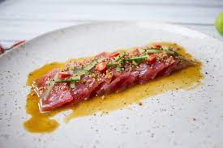

Ceviche Nikkei

Description
This ceviche is the result of the fusion between Peru and Japanese cuisines.
Ingredients
For the asian part of the sauce
- 4 tbsp soy sauce
- 100 ml apple or cider vinegar
- 2 orange zest and juice
- 40 g peeled and cut ginger
For the leche de tigre
- 150 ml lime juice about 15 limes
- 2 garlic cloves
- 30 g brown onion, roughly chopped
- 20 g peeled and cut ginger
- 50 g scraps of white fish if you're making the recipe with white fish, you can use the uneven pieces for this
- 30 g celery, sliced
- 1 chili pepper
Fish
- 260 g tuna filet
- 1 chili pepper
For garnish
- piece of cucumber
- to taste crispy quinoa
- to taste chopped chili
- to taste drops of sesame oil
Steps
For the asian part of the sauce
- Put everything on the pot on high heat until it goes syrupy
- Put it in the fridge or freezer until cold to mix with the tiger's milk
For the tiger's milk
- We put everything in the blender and pulse about 5 times to grind them down a bit but definitely not fully.
- Pass it through a fine sieve and squeeze down to get all the juices out
- If you're not going to use immediately, keep it in the fridge so it doesn't go bitter
The Fish
- Cut thin tuna slices, without any dark meat
- Season with salt before putting on the plate
To decorate
- Put the tuna slices in a line and then put the sauce on top. Do this right before eating or the fish will cook.
- Cut thin sticks of cucumber, only the green part plus a bit of flesh. With the center part you can flavour water
- Put the crispy quinua, the sliced chili and sesame oil drops on top to finish off.